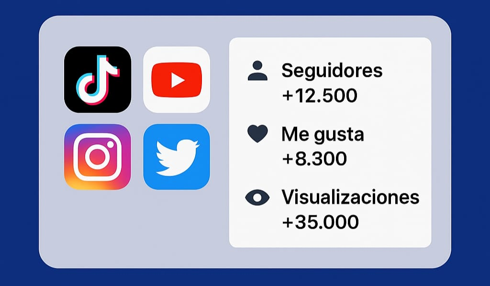

Ev Loader
¡Descarga el hack para 8 Ball Pool ahora!

Primero descarga el EV Loader, que es el cargador principal del hack. Luego, descarga el 8 Ball Pool modificado para que funcione correctamente con el EV Loader. Sigue las instrucciones y empieza a ganar cada partida.
Descargar EV Loader
8 BALL POOL
Descarga el 8 Ball Pool modificado

Este es el archivo modificado de 8 Ball Pool que necesitas para que el EV Loader funcione correctamente. Instálalo después de tener el EV Loader y asegúrate de permitir la instalación desde orígenes desconocidos en tu dispositivo Android.
Descargar 8 Ball Pool Modificado
¡Visita nuestro Panel de Seguidores!
Gana más seguidores fácilmente con nuestras herramientas.

Entra a nuestro Panel de Seguidores donde puedes comprar seguidores, likes, vistas y más para tus redes sociales. Es rápido, seguro y fácil de usar. Si ya tienes cuenta, inicia sesión. Si no, puedes registrarte gratis.
Ir al Panel de Seguidores
Bloqueador de Páginas
Protege tu navegación bloqueando contenido no deseado

Este es un bloqueador de páginas eficiente que te ayuda a evitar sitios no deseados, distracciones o contenido inapropiado.
Bloqueador de Páginas
Descargar Videos de YouTube en Segundos
Convierte y descarga tus vídeos favoritos de YouTube rápida y fácilmente.

Bienvenido a nuestra herramienta en línea para descargar vídeos de YouTube. Solo necesitas copiar el enlace del video, pegarlo en el campo de entrada y hacer clic en "Descargar". Compatible con la mayoría de los dispositivos y navegadores, sin necesidad de instalar programas. Disfruta tus videos favoritos donde y cuando quieras
Descargar Videos
Descarga videos de TikTok sin marca de agua al instante
Descarga cualquier video de TikTok en alta calidad sin marca de agua. Solo pega el enlace y consigue tu video en segundos, gratis y sin registros.

¿Quieres guardar tus videos favoritos de TikTok sin esa molesta marca de agua? Con nuestra herramienta, puedes descargar videos en HD con solo pegar el enlace. Es rápido, seguro y completamente gratis. Ideal para creadores de contenido, editores o simplemente para compartir sin marcas
Descargar Videos